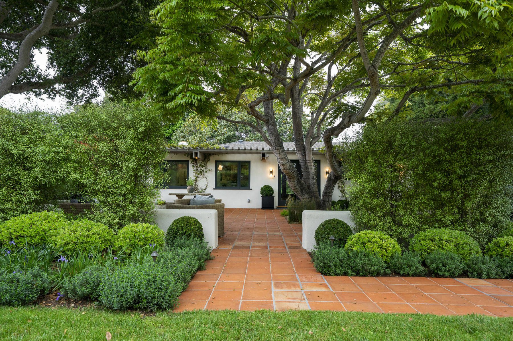

About
Close to the Work
Nick Mason Construction Co. builds custom homes along California's Central Coast. Nick works his sites personally. He knows the crew by name, he knows the wood by grain, and he's the first one to look at a detail twice.
He ships materials from wherever the right ones live. He chooses them one at a time. What's behind the wall gets the same attention as what's in front of it. What the site already has, he uses. Old beams become new beams. Salvaged planks become benches. The crew stays because the work is the kind worth staying for.
Contact
Location
Address Line 1
City, State ZIP